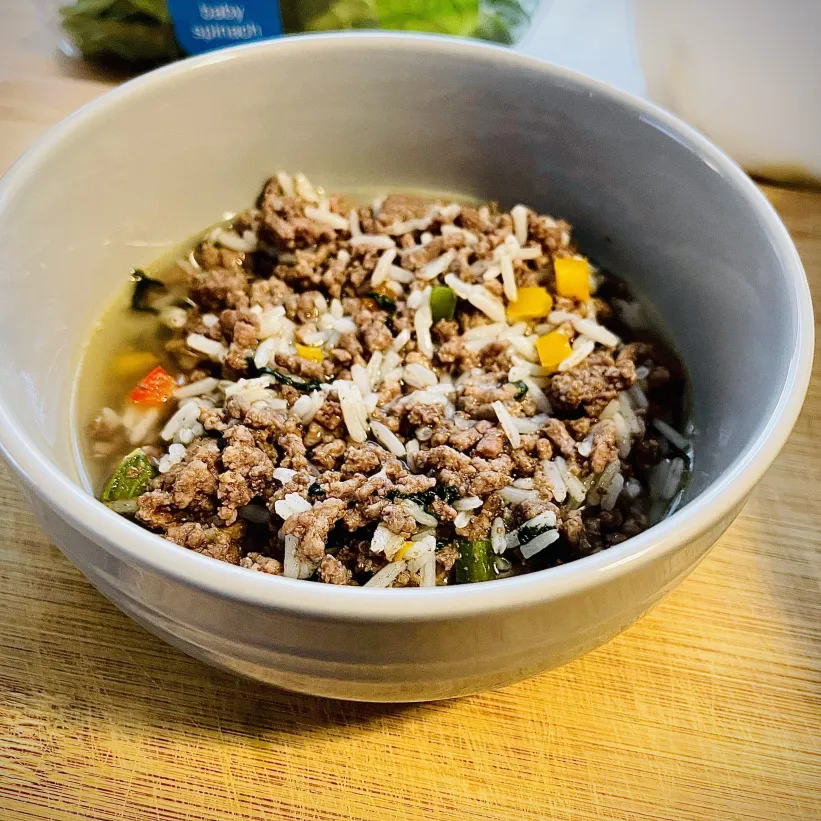

Return Home
Monster Mash

Description
Monster Mash is the flagship meal from the Vertical Diet by stan Efferding. It was created to maximize caloric intake for strongman competitors without compromising digestion.
Ingredients
Here are the ingredients required for this recipe.
- White rice
- Ground bison, or extra lean ground beef
- Bell peppers, preferrably red
- Spinach
- Chicken or bone broth
Steps
Here are the steps required to cook Monster Mash!
- Measure 1-cup of dry white rice
- Rinse your rice until water becomes clear
- Add 1-cup of water to the rice in a rice cooker, and turn it on
- Cook 300-grams of extra-lean ground beef or bison in a pan that's lightly oiled
- Once browned, add 1-chopped bell pepper and 100 grams of spinach to the pan
- Add the contents of your pan to the rice cooker bowl once both have finished cooking
- Finally, add two-thirds of a cup of chicken or bone broth to your mixture!